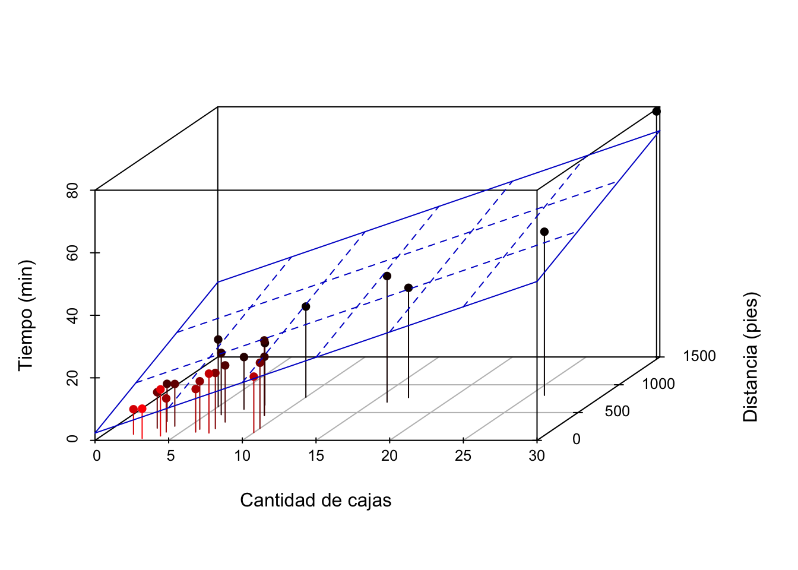

En este capítulo se presenta una descripción breve del modelo de regresión lineal múltiple y la forma de estimar los parámetros del modelo con R.
Modelo estadístico
El modelo estadístico en regresión lineal múltiple es una generalización del regresión lineal simple para \(k\) covariables. El modelo en este caso se puede escribir de dos formas como se muestra a continuación.
En esta forma la variable respuesta \(Y\) se expresa como una suma de \(\beta_0 + \beta_1 X_{1i} + \beta_2 X_{2i} + \cdots + \beta_k X_{ki}\) y un error aleatorio \(e_i\) el cual tiene distribución \(N(0, \sigma^2)\). El modelo en esta forma se puede expresar como sigue.
En esta forma la variable respuesta \(y\) tiene distribución normal con media que cambia en función de las variables \(x_k\) pero con varianza constante. El modelo en esta forma se puede expresar como sigue.
En cualquiera de las dos formas el vector de parámetros del modelo es \(\boldsymbol{\theta}=(\beta_0, \beta_1, \cdots, \beta_k, \sigma)^\top\).
Ejemplo
Como ilustración vamos a usar los datos del ejemplo 3.1 del libro de Montgomery (2006). En el ejemplo 3.1 los autores ajustaron un modelo de regresión lineal múltiple para explicar el Tiempo necesario para que un trabajador haga el mantenimiento y surta una máquina dispensadora de refrescos en función de las variables Número de Cajas y Distancia.
Los datos del ejemplo están disponibles en el paquete MPV (por los apellidos de los autores). A continuación el código para cargar los datos y una muestra de las 6 primeras observaciones de la base de datos, en total se disponen de 20 observaciones.
Un gráfico en 3d es obligratorio para explorar la relación entre las variables, este diagrama de puede obtener usando el paquete scatterplot3d. A continuación el código para construirlo.
De la figura anterior se ve claramente que a medida que aumenta el número de cajas y la distancia los tiempos tienden a ser mayores.
El mismo diagrama de dispersión anterior se puede crear usando el paquete plotly. El lector puede jugar con el diagrama, puede moverlo, girarlo, acercarse y muchas cosas más, la curiosidad le mostrará las diferentes posibilidades.
Otro gráfico de dispersión en 3d se puede construir usando el paquete rgl. A continuación está el código para obtener el diagrama de dispersión. De tarea se deja que el lector copie el código en la consola y reconstruya el gráfico.
¿Cómo se pueden interpretar los efectos \(\hat{\beta}\)?
Si el camión queda un pie más lejos (30.48 cm) de la máquina, se espera que el tiempo promedio de mantenimineto aumente en 0.014 minutos.
Si el camión queda 100 pies más lejos (30.48 mt) de la máquina, se espera que el tiempo promedio de mantenimiento aumente en 1.4 minutos.
Por cada caja adicional de refresco que se deba llevar, se espera que el tiempo promedio aumente en 1.616 minutos.
Si el camión quedó a 0 pies de distancia y no hay que llevar cajas de refresco, se espera que el tiempo promedio de mantenimiento sea de 2.341 minutos.
Warning
La interpretación de cada \(\hat{\beta}\) se hace suponiendo que las demás variables quedan constantes en algún valor.
Para incluir el plano de regresión que representa el modelo ajustado anterior se puede usar el siguiente código.
# Se crea el grafico 3d y se guarda en un objeto, por ejemplo mi_3dlibrary(scatterplot3d)mi_3d <-scatterplot3d(x=cantidad, y=distancia, z=tiempo, pch=16, cex.lab=1,highlight.3d=TRUE, type="h", xlab="Cantidad de cajas",ylab="Distancia (pies)", zlab="Tiempo (min)")# Para agregar el plano usamos $plane3d( ) con argumento modelo ajustadomi_3d$plane3d(mod, lty.box="solid", col="mediumblue")

Montgomery, E. & Vining, D. & Peck. 2006. Introducción Al Análisis de Regresión Lineal. 3ed ed. Cecsa.